Mortgage2,140opportunities found
- Refinancing from another bank1,310
- Buying a home830
Closed€31.4M112 mortgages, average €280k
 ×Alpenkreis Bank
×Alpenkreis BankA regional bank with 40,000 customers used Seekridge to spot who was about to refinance, buy, renovate or move into a new home, and to put each opportunity in front of the right advisor at the right time.

Results in the first six months
Alpenkreis saw every payment its customers made, but nobody was reading them. Mortgages paid to other banks, planned purchases and renovations were invisible until a customer walked in, or walked away.
Seekridge read the bank’s transaction and CRM data alongside market data, and turned it into ranked moments, each with the reason attached, delivered as tasks in the advisors’ CRM.
Context
Like most regional banks, Alpenkreis grew its mortgage book by competing for new customers, while its own customers quietly refinanced, bought and renovated with other lenders. Advisors received monthly lists, but with no reason attached, most names went uncalled. The bank wanted to know who to call each week, and why, before a competitor did.
“We used to find out a customer had refinanced when the redemption request arrived. Now our advisors call months earlier, and they know exactly why.”Katrin AlbersHead of Retail Banking, Alpenkreis Bank
seekridge.example hello@seekridge.exampleSeekridge and Alpenkreis Bank are fictional; all figures are illustrative, page 1/2New opportunities identified, by type
From moment to closed business
Closed value: €31.4M mortgages + €5.9M green loans = €37.3M new lending, plus €366k annual insurance premium.
How the rollout went
CRM, customer and transaction data linked
Moments checked against 2025 outcomes
Two Hamburg branches
Rolled out on the pilot’s numbers
Share a sample of your data. In 30 minutes, we’ll show you the opportunities in it, and the evidence behind each one.
seekridge.example hello@seekridge.exampleSeekridge and Alpenkreis Bank are fictional; all figures are illustrative, page 2/2